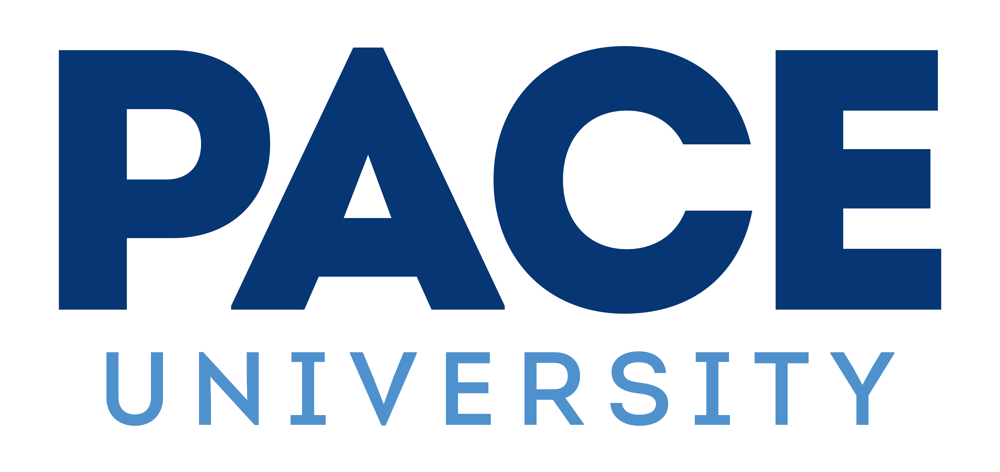

Highly skilled and results-driven Software Engineer – AI/ML Around 4+ years of hands-on experience in designing, developing, and deploying machine learning and deep learning models across healthcare and general domains. Adept at building end-to-end AI solutions using Python, TensorFlow, PyTorch, Scikit-learn, and cloud platforms (AWS, Azure, GCP). Experienced in real-time data pipelines, NLP, computer vision, model optimization, and MLOps practices. Strong understanding of HIPAA compliance and model governance in healthcare settings.
Outside of work, you can find me working on personal projects or watching movies.

Engineered deep learning models using TensorFlow and Keras (CNN, ResNet) to analyze radiology and pathology images, boosting diagnostic precision by 22% and assisting radiologists with second-opinion insights.
Built NLP pipelines using BERT and Hugging Face Transformers to extract and structure data from over 5M clinical notes and EMRs, enhancing physician workflows and reducing chart review time by 30%.
Developed risk stratification and patient readmission prediction models using XGBoost and Random Forest, achieving an AUC score of 0.88 and enabling targeted care management interventions.
Designed and deployed secure, scalable ML APIs with FastAPI and Docker on AWS SageMaker, supporting real-time predictions integrated with hospital systems while maintaining HIPAA compliance.
Automated data pipelines and ML workflows using Apache Airflow and AWS Glue for ingesting structured/unstructured health data, reducing ETL run-time by 35% and ensuring data freshness.
Implemented explainability with SHAP and LIME and monitored models using MLflow and Prometheus, supporting responsible AI practices and regulatory audits in clinical settings.
Developed ML models using LightGBM and logistic regression to predict hospital admission risk from claims, vitals, and wearable sensor data, improving preventive care delivery by 19%.
Created real-time data pipelines using Apache Kafka, PySpark, and MongoDB to ingest and process high-frequency patient telemetry from IoT devices for early deterioration alerts.
Designed and deployed NLP solutions using spaCy and BERT to identify high-cost cases and coverage gaps in payer data, streamlining care plan adjustments and reimbursement validation.
Integrated models into HIPAA-compliant cloud environments (AWS SageMaker + Lambda), using CI/CD pipelines via Jenkins and GitHub Actions for automated deployment and version control.
Led development of MLOps architecture using MLflow, DVC, and Docker for full lifecycle model tracking, reproducibility, and drift detection across multiple patient cohorts.
Built dashboards in Tableau and Power BI to present insights to clinicians and operations teams, covering patient segmentation, readmission trends, and model outcomes for decision support.